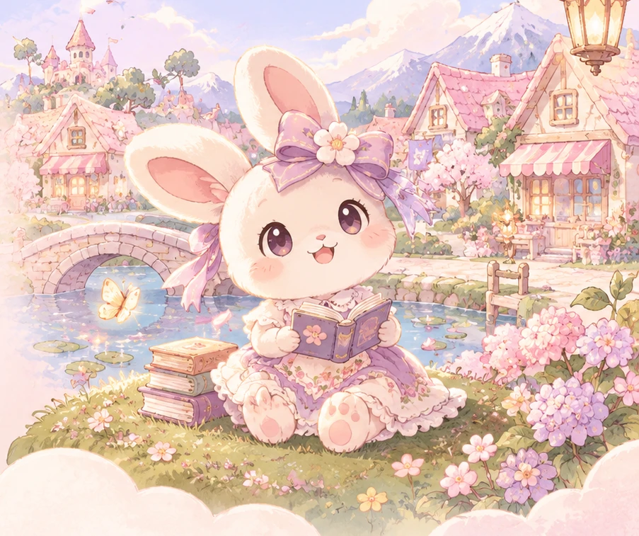

Sakura Village
Flower-lined paths and new districts in development.
Meet Mochi. Dream up delightful outfits, decorate a cozy home and explore a village full of little wonders.
Explore Pawmora ✿ Share your ideas ♡Independent game • Made with Unity • In development

Flower-lined paths and new districts in development.
Dreaming of embroidered dresses, bows and themed collections.
A cozy space to make your own.
Fishing and cooking prototypes in development.
Vote for the next little wonder. No GitHub account needed.
Please avoid personal information. Suggestions are reviewed privately. A pseudonymous identifier derived from your network address limits repeat submissions; Cloudflare verification is used.
Character creation, home, town and shop prototypes.
Inventory, outfit fitting, movement and scene transitions are in development; release readiness is not verified.
Device testing, community demo and mobile release preparation.
New announcements appear here.
Dear diary, today I dreamed of a village full of blossoms and a wardrobe full of ribbons. One day I hope to sail across the lake. Love, Mochi.
Fictional diary; game features are in development.
2D web preview; saved only in this browser.
Choose a place.
Concept map, not the actual game map.
Claim a keepsake supporter badge in this browser. No account or email needed.
This badge is not a beta registration or in-game reward.
No email is required. A pseudonymous identifier derived from your network address is stored to limit repeat registrations. People sharing a network may count as one registration. This does not guarantee beta access or game rewards.
Reward illustrations are concept designs.
Collect all three blossoms.
Planned: Sakura crown and profile badge.
Claim the supporter keepsake.
Planned: founder outfit, badge and title.
Complete both web milestones.
Planned: exclusive princess dress, crown and title.
Look among Mochi’s dreams.
Open the diaryExplore the village map.
Explore the villageLook where the founders gather.
Visit the clubThese are browser-only web milestones. In-game rewards are planned; redemption codes, account registration and guaranteed delivery are not available yet.
Back to my collectionThis is not a beta invitation. No email is requested. Your platform preference and a pseudonymous network-derived identifier are stored; registrations from the same network may update each other.